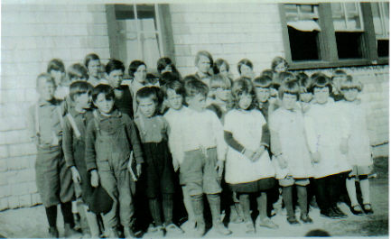

The Family Chronicle
No. 133 February 28, 2006
____________________________________________________________________

Little Branch School, 1929

Cameron School 1933
Above Photos
I am grateful to Della (Adams) O’Neill for sharing the above photos taken by the teacher of the time, Annie May Loggie.
Glendenning Family Memories
As some of you know, I have been gathering information about my family, both sides, for more than 60 years. I decided that it was time to pull my notes together and publish them. The task is complete and, when I next visit the Miramichi, I intend to present a copy to the Chatham Library
Whittling Remembered by Donald Edge
"in carving of wood, to make all manner of cunning work" (Exodus)
My father was a good whittler. I have three of his pocketknives, and they are still sharp.
I also have a lidless gum box that he carved and that bears his initials JME. It is shaped like a book, and when you stand it upright like a book, the top of the pages has a carved crescent that enables you to slide that top out of the rest of the book. In the space inside the initialed wood book my father kept the hardened resin from spruce trees that could be chewed like chewing gum. You would pick up the book and rattle it to see if it contained any spruce-gum. The gum had a distinctive flavor, but it was not long before it lost its chewableness. I have looked for other spruce-gum boxes, but I have not found any.
When I was a boy, every man and boy carried a pocketknife, usually a "Barlow." I carry a small Swiss army knife now, and I use it several times a day for many different purposes. So it must have been for farmers in Black River, fishing the barlow out of overalls to cut a chaw from a plug of chewing tobacco, pry a nail from a shoe, cut twine on the threshing machine, peel an apple in one continuous curl, play mumblety-peg, carve a spruce-gum box.
Sometimes in Black River you simply whittled, reducing sticks to toothpicks for no particular reason. After all, you were caught up in the Protestant ethic and you had to keep busy, even if you were doing nothing.
Doreen (Glendenning) Nicol reminded me of:
Fender skirts to partly cover the rear wheels
Running boards on the old Model A, and others.
Continental kits that made any car look like a Lincoln
Dyna flow Transmissions – an early automatic transmission
Rear mounted luggage racks – there were no trunks
Steering knobs on steering wheels
Rumble seats on coupes
Curb feelers
Starting the car with a crank
Side mounted spare tires
Antifreeze was not permanent – it often boiled away
And then I remembered:
The first hydraulic brakes
The frequency of tire repair
The first red car in Black River belonged to Gordon Adams
Jessie Adams with his roadster/convertible
The luxury of Alex MacDonald’s Oakland car
Tires with tubes
Using the Model A to power the woodcutter
All the new half-ton trucks that appeared on the road in the spring if the fishing was good.
Early gas tanks were in front of the windshield, were gravity fed and some were even under the hood.
Windshield wipers were vacuum operated and slowed down when the engine was labouring on a hill
Each side of the hood lifted up to give access to the engine.
Windshield wipers were suspended from the top of the windshield
A&R Loggie’s used Godferson trucks for delivery. (Website only mentions Godferson trucks as fire engines.)
Arnie Watling had the first new truck in Black River after the war, a red one at that and I believe a Chevrolet, which he used for delivering the mail.
Direction signals were an aftermarket item. My first car was a 1952 Dodge to which I added direction signals purchased from Canadian Tire
Collapsible racks that fastened to running boards to hold luggage
The Family Chronicle (Copyright) is an occasional newsletter published by Don Glendenning and posted on the family website. It is intended to share information about my family, community and the times in which I grew up. While every effort is made to be accurate, errors are likely to occur. Comments, enquiries and information may be sent to 62 Queen Elizabeth Drive, Charlottetown, PEI, C1A 3A9. Tel: 902 892 5859. Email: don@glendenning.net Web: www.glendenning.net/don